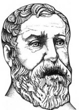
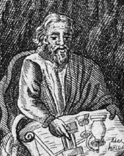

When Heron lived is not well established. Most accounts place his life around 0 AD.
Heron, (also known as Hero) was a Greek mathematician. Some authorities place his birthday early 150 BCE in Ptolemaic, Egypt. While other scholars have dated his birth to be 250 CE in late Roman Empire. Nothing is really known of Hero's life, but what we do know comes from clues in the 14 known books by him.
As a student, Hero spent most of his time in the Library at the University of Alexandria. He loved to be in the library, because of the series of gardens vast collection of books. Hero was strongly influenced by the writings of Ctesibius of Alexandria. He may have been a student of Ctesibius. When older he taught at the University of Alexandria, and taught mathematics, mechanics, and physical science. He wrote many books and he used them as texts for his students, and manuals for technicians, and were written in Greek, Latin and Egyptian.

One of his books, Metrica, was lost until the end of the 19th century. Scholars knew of its existence only through one of his other books, Eutocuis. In 1894, historian Paul Tannery discovered a fragment of the book in Paris. Then, in 1896, R. Schone found a complete copy in Constantinople. This book is the most famous book that Hero wrote. It consists of 3 volumes, and shows ways to calculate area and volume, and their divisions.He was an accomplished inventor and mechamnical engineer. Among his inventions were a reaction steam turbine, a vending machine, and a wind-powered organ.
Aside from being an accomplished mechanical engineer, he is also known for some significant contributions in mathematics. Perhaps his most famous: